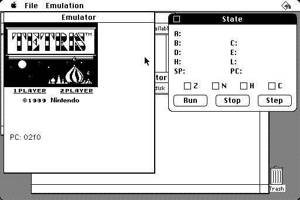
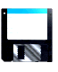

^ Home

 Gray Brick
Gray Brick
A revolutionary new way to play your favorite Game Boy™ games on your
Apple™ Macintosh™!
Now you can enjoy the hottest handheld games right on your Mac's
big screen! gb6 brings the excitement of Nintendo's new
Game Boy to your desktop with stunning speed and accuracy.
 |
 |
 |
Features
- Lightning-fast performance: Revolutionary Just-In-Time compilation
technology translates Game Boy code directly to your Macintosh's
native 68000 instructions.
- Games are displayed at 2x magnification (320x288 pixels) with advanced
ordered dithering that looks great on any Mac display, color or black
& white.
- Supports Memory Bank Controllers including MBC1 and MBC3. Play
Tetris™, Super Mario Land™, and hundreds of other titles!
- Your game progress is preserved, just like the original cartridge. Save
files can be backed up to floppy disk.
- Intuitive Macintosh interface: Configure your keyboard layout with our
easy Key Mapping dialog. Take screen captures with a single menu command!
System Requirements
- Macintosh Plus, SE, SE/30, Classic, or Macintosh II series
- System 6.0.5 or later
- 4 MB RAM (for basic games, 8-16 MB for larger games)
- Hard disk with 500K free space
- Game Boy ROM images (not included)
 Download
Get Gray Brick right here on the World Wide Web by navigating to the
GitHub releases page.
For more technical details, see the README.
Non marketing speak
For best performance, a 68030 or 68040 processor is recommended.
Original "compact" 68000 Macs get 7-8 FPS. 68030s get 30-60+ FPS depending
on settings. 68040s excel with any settings.
Although this emulator is indeed fast considering the target platform,
accuracy and compatibility are actually not good. Many of the most popular
games work well, but I haven't tested most of the Game Boy's huge catalog.


Last updated 22 Jan 2026